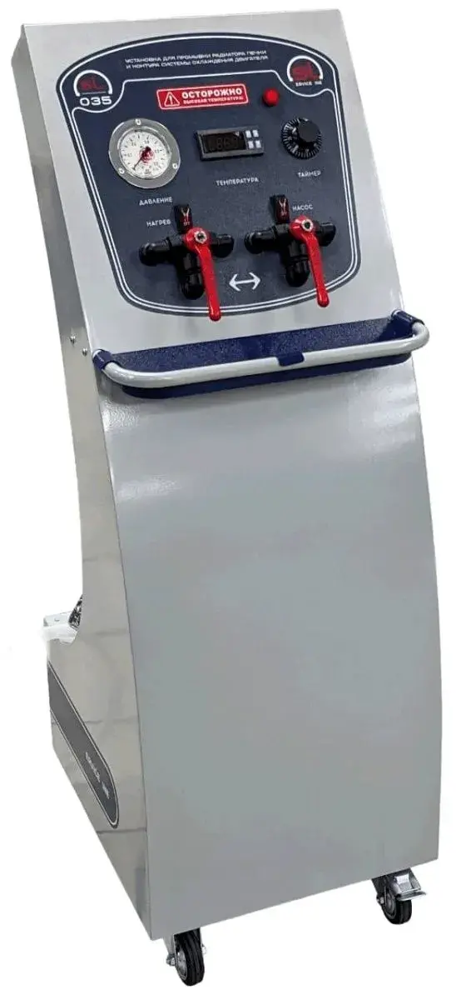
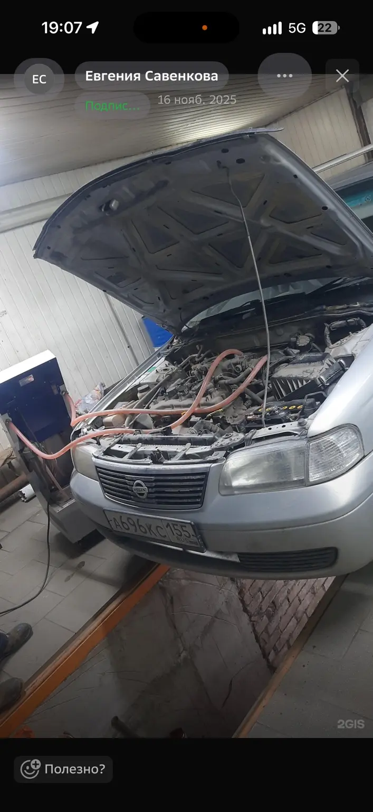

В салоне стало холодно
Печка работает, но воздух остаётся едва тёплым даже после прогрева двигателя.
Аппаратная промывка без снятия
Восстанавливаем циркуляцию и теплоотдачу радиатора отопителя на профессиональной установке. Цена зависит от способа подключения к конкретному автомобилю.
Когда печка греет слабо
Загрязнения внутри радиатора мешают антифризу нормально циркулировать. Аппаратная промывка помогает вернуть тепло без разборки панели салона.
Печка работает, но воздух остаётся едва тёплым даже после прогрева двигателя.
С одной стороны дует теплее, а с другой заметно холоднее.
Комфортная температура появляется слишком медленно или не достигается вовсе.
Подключаем установку к контуру печки без демонтажа радиатора отопителя.
Меняем направление потока, чтобы эффективнее удалить накопившиеся отложения.
После процедуры контролируем циркуляцию и работу отопителя.
Профессиональная установка
Установка прогоняет промывочный состав через радиатор печки с контролируемой температурой и давлением. Это позволяет работать аккуратно и последовательно.


Понятный процесс
Перед началом уточняем симптомы и оцениваем доступ к патрубкам. Стоимость согласуем до выполнения работы.
Уточняем работу печки и состояние охлаждающей жидкости.
Подбираем безопасный способ подключения для вашего автомобиля.
Подаём состав и меняем направление циркуляции.
Удаляем остатки загрязнений и промывочного состава.
Проверяем циркуляцию и нагрев воздуха в салоне.
Стоимость услуги
Итоговая стоимость зависит от сложности доступа и способа подключения установки к системе конкретного автомобиля.
Перед началом работы мастер осмотрит автомобиль и назовёт точную стоимость.
Уточнить стоимостьОтвечаем просто
Расскажите марку, модель и симптомы — подскажем, подходит ли промывка в вашем случае.
Обычно нет. Установка подключается к контуру отопителя, и промывка выполняется без снятия радиатора и панели салона.
На разных автомобилях отличается доступ к патрубкам и способ подключения. Точную цену мастер назовёт после осмотра.
Она помогает при загрязнении и сниженной пропускной способности. Если радиатор повреждён или есть другая неисправность системы отопления, потребуется отдельный ремонт.
Промывку радиатора печки выполняем только по адресу: Омск, 24-я Северная, 157.
Запись на промывку печки
Промывка радиатора печки
Другие услуги
Все страницы связаны между собой и содержат отдельные цены, адреса и контакты.